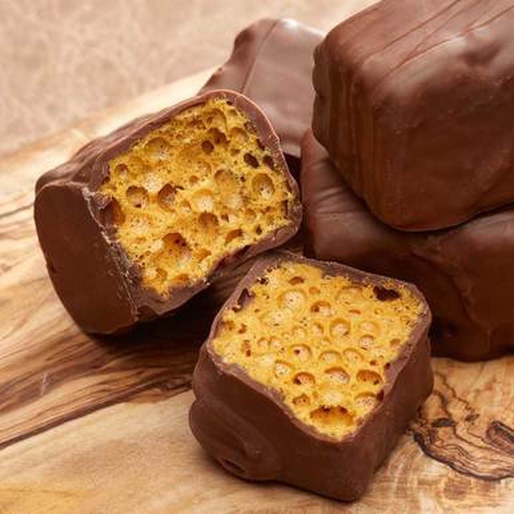

<html>
    <head>
        <link rel="stylesheet" href="">
    </head>
    <body>
        
    </body>
</html>


<html>
   <link rel="stylesheet" href="IceCream.css">
    <link rel="stylesheet" href="NavBar.css">
    <link rel="stylesheet" href="RecipeTemplate.css">

    
    <head>
        <div id="menu">
            <ul>
                <li><a href= "index.html" >Home</a> </li>
                <li><a href= "Desserts.html" >Desserts</a> </li>
                <li><a href="IceCream.html">Ice Cream</a></li>
                <li><a href= "Candies.html" class="active">Candies</a> </li>
                <li><a href= "Cookies.html">Cookies</a> </li>
                <li><a href= "Cakes.htmlclass=" >Cakes</a> </li>
                <li><a href= "Pies.html">Pies</a> </li>
                          
            </ul>
        </div>
        <style>
            ul {
                list-style-type: none;
                margin: 0px;
                padding: 0px;
            }
            li {
                display: inline;
            }
        </style>

        <body>
            <div class="innerbox"></div>
            <h1> Angel Food Candy</h1>
       <div class="innerbox">
        

            <div class="container">
                
                <div id="InstructionsHeader"><h3>Instructions</h3></div>
                <div id="IngredientsHeader"><h3>Ingredients</h3></div>
                <div id="Instructions"><h4>
                    <p>Preheat the oven to 250 degrees. Combine sugar, syrup and vinegar, Heat in saucepan over medium heat. Stir until</p>
                    <br>
                    <p>sugar is dissolved. Cook until 280 - 290 degrees. Remove from heat. Stir in baking soda. Pour into a 9 x 13 pan.</p>
                    <br>
                    <p>Do Not Spread in the pan. The batch will spread while in the oven. Place the pan in the oven for 20 minutes. Turn </p>
                    <br>
                    <p>off the oven and open the oven door ajar. Leave the candy in the oven for about 10 minutes. Set on a wire rack and</p>
                    <br>
                    <p>let cool to room temperature. Cut into the size pieces you   desire. Coat in chocolate if desired.</p> 

                    <br></h4></div>
                <div id="Ingredients"><h4> 
                    <p>1 cup granulated sugar</p>
                    <br>
                    <p>1 cup dark corn syrup</p>
                    <br>
                    <p>1 tablespoon vinegar</p>

                    </h4>
    </li></div>

            </div>
       </div>
        </body>
</html>